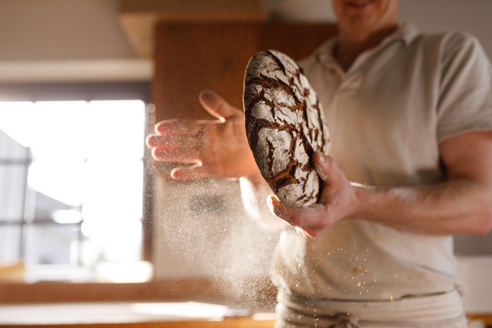
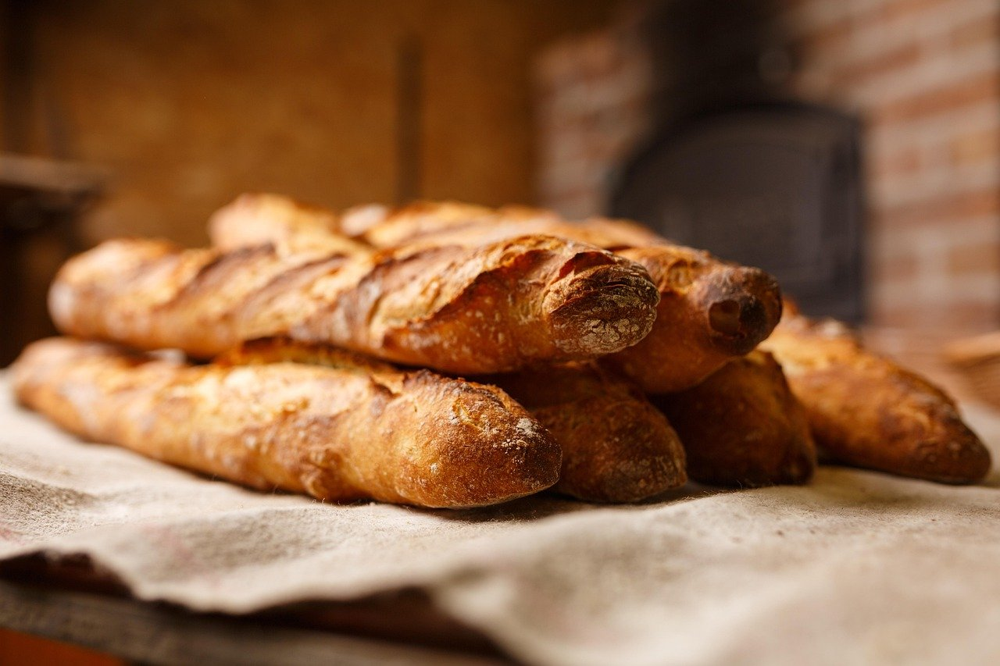
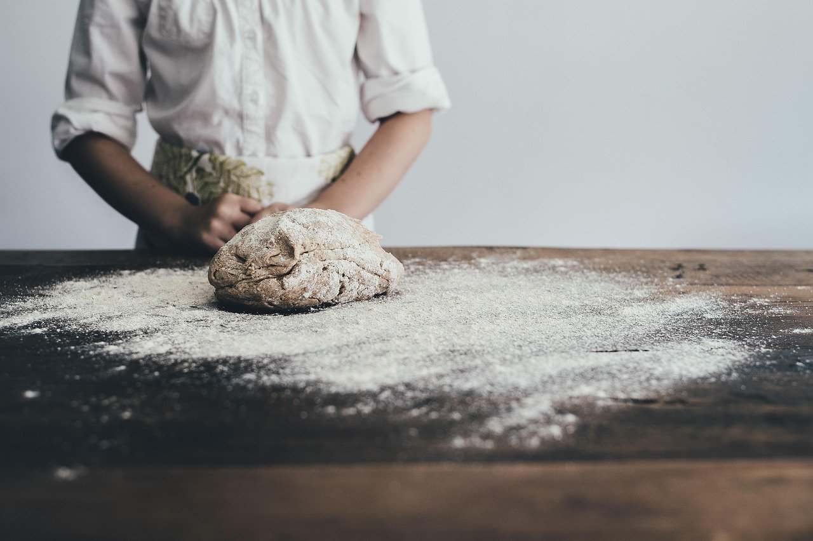
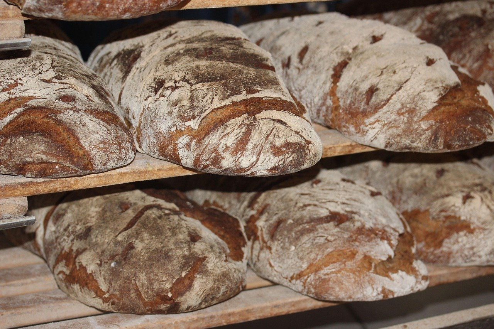
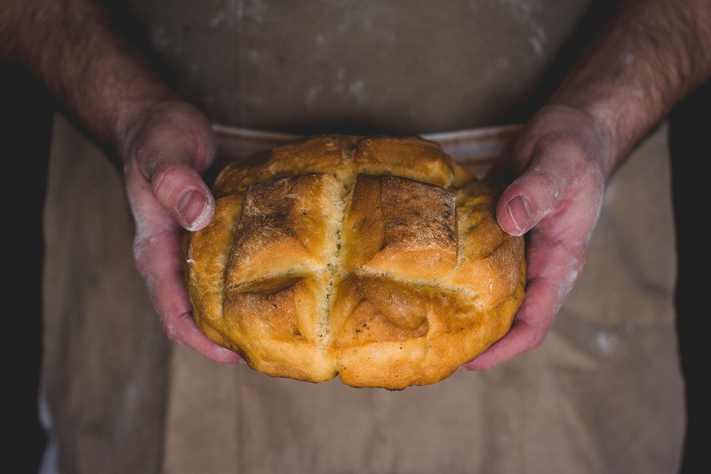

Proba Bakery Austin
Fresh bread and Texas kolaches daily
Fresh sourdough bread, Texas-style kolaches, and custom birthday cakes in Austin.
Tuesday to Sunday, 7am to 3pm
(512) 555-0142

Fresh bread and pastries, steps from the Continental Club
Proba Bakery Austin brings fresh bread and pastries just steps from the Continental Club. Stop in for Texas-style kolaches, order a custom birthday cake, or pick up a tray of treats for your next event. Free parking is available behind the shop.
Gallery




Visit us on South Congress
Address
1500 South Congress Avenue
Austin, TX 78704
Hours
Tuesday to Sunday, 7am to 3pm
Phone
-
Parking
You can park for free in the lot behind the bakery.
-
Early mornings
Open from 7am Tuesday to Sunday.
-
Custom cakes
Birthday cake orders available.